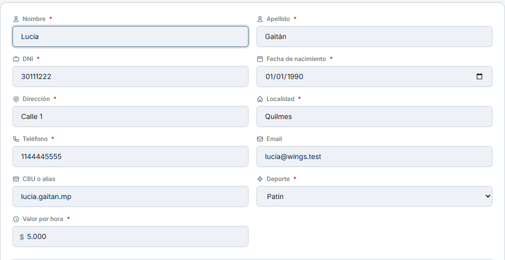
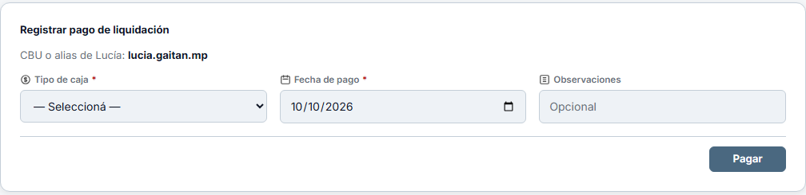
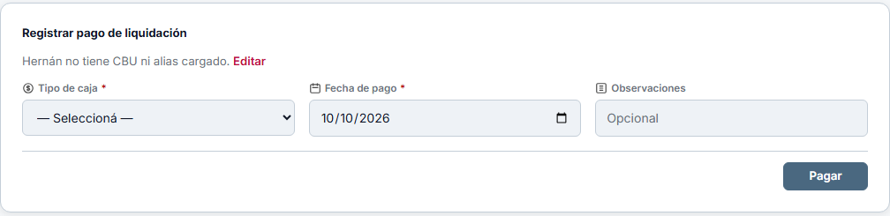
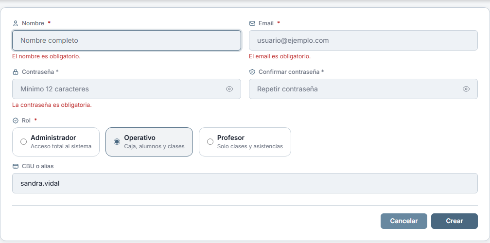
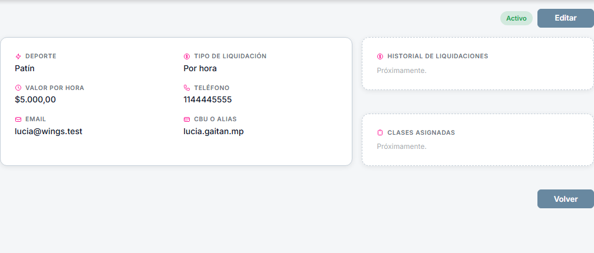
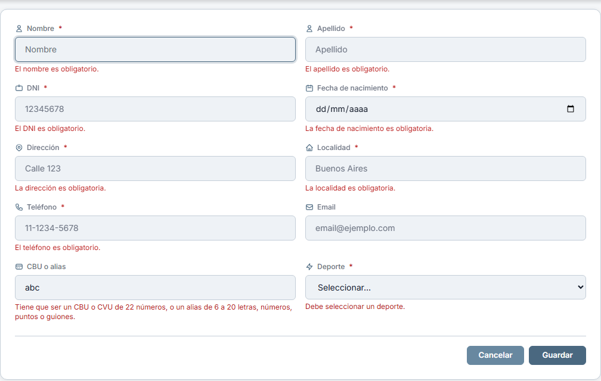

Wings · Para decidir
10/10/2026 · Lo que espera una definición tuya, de lo que hace Claude. Tocá una imagen para verla grande.
B10 — Dónde guardar el CBU o alias
- Qué cambia
- Aparece un campo nuevo, «CBU o alias», en cuatro lugares: el formulario del profesor, su ficha, la pantalla de pagar una liquidación, y el alta y edición de un usuario operativo.
- Por qué
- Para pagarle a un profesor hace falta su alias o su cuenta, y ese dato vivía en el teléfono de Vanina. Ahora queda en el sistema y aparece justo cuando se lo necesita: al pagar.
- Lo que definiste
- Un solo campo para las dos cosas. Opcional. Solo lo ve el admin. También para el operativo, que cobra sueldo.
- Lo que agregué sin preguntarte
- Un control al guardar: acepta un CBU o CVU de 22 números, o un alias de 6 a 20 letras, números, puntos o guiones. Si se pega un CBU con espacios, los saca. Rechaza lo que a simple vista no es ninguna de las dos cosas, que es el error típico al copiar a mano. No verifica que la cuenta exista.
- Quién lo hizo
- Claude. Está hecho y probado en esta máquina, sin publicar.
Te pido: OK para publicarlo, o decime qué cambiar.
1. Formulario del profesor
El campo nuevo está a la izquierda, debajo de Teléfono. Sin asterisco, porque es opcional.

2. Pagar una liquidación
Arriba del formulario de pago, el dato para transferir.


3. Usuario operativo
El campo aparece solo cuando el rol elegido es Operativo. Con Administrador o Profesor no se muestra, y si se cambia el rol el dato se borra. La imagen muestra el formulario devuelto con errores, que es como se consigue ver el rol ya elegido.

4. Ficha del profesor

5. Cuando se escribe algo que no es ni CBU ni alias

Capturas de escritorio, de páginas pedidas al sistema y dibujadas con Chrome. No hay capturas de celular: son campos de formulario iguales a los que ya existen. En la pantalla de la liquidación se ven además unos íconos nuevos en las etiquetas: son de Codex, que está trabajando en esa pantalla; no son parte de esto.